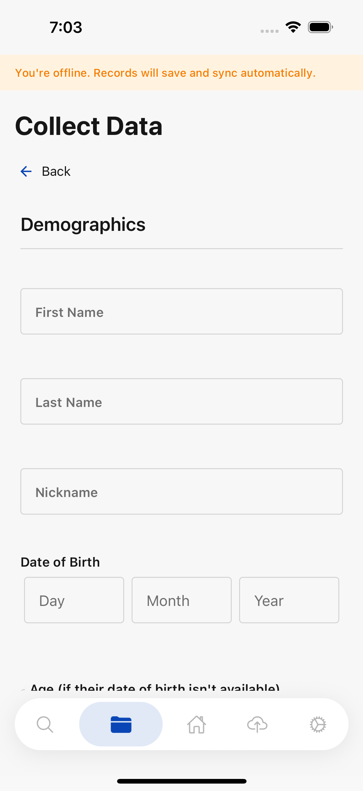
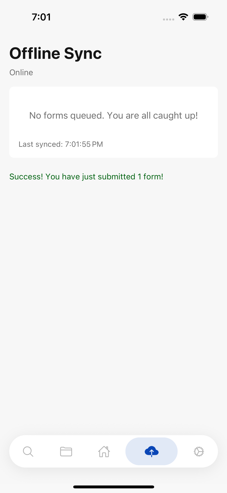

1The ideaLa idea
Puente is built to be used where there is no signal. You can open a form in a community with no coverage, fill it in, and save it. Nothing is lost by being offline.
Puente está hecho para usarse donde no hay señal. Puedes abrir un formulario en una comunidad sin cobertura, llenarlo y guardarlo. No se pierde nada por estar sin conexión.
There is one thing worth understanding, and everything else in this guide follows from it: until a survey reaches the server, the phone is the only copy. Not the only recent copy — the only copy anywhere. A survey saved on a phone that is lost, wiped or reset is gone.
Hay una sola cosa que conviene entender, y todo lo demás en esta guía viene de ahí: hasta que una encuesta llega al servidor, el teléfono es la única copia. No la copia más reciente — la única copia que existe. Una encuesta guardada en un teléfono que se pierde, se borra o se restablece, se perdió.
So the job is not "fill in surveys". The job is "fill in surveys and get them to the server". This guide is about the second half.
Entonces la tarea no es "llenar encuestas". La tarea es "llenar encuestas y hacerlas llegar al servidor". Esta guía trata de la segunda mitad.
2Knowing you are offlineSaber que estás sin conexión
The app tells you in two places, and it does not wait for you to ask.
La aplicación te avisa en dos lugares, y no espera a que preguntes.
- A banner appears on the form: "You're offline. Records will save and sync automatically."
- The tab at the bottom of the screen reads Offline.
- Aparece un aviso en el formulario: «Estás sin conexión. Los registros se guardarán y sincronizarán automáticamente.»
- La pestaña de abajo dice Sin conexión.

Being offline does not stop you collecting. It only changes when the survey leaves the phone. Carry on working.
Estar sin conexión no te impide recolectar. Solo cambia cuándo sale la encuesta del teléfono. Sigue trabajando.
3Saving a survey with no signalGuardar una encuesta sin señal
Fill the form in and submit it exactly as you would with a connection. The app decides what to do; you do not have to choose a different button.
Llena el formulario y envíalo igual que lo harías con conexión. La aplicación decide qué hacer; no tienes que elegir un botón distinto.
The confirmation tells you which happened:
La confirmación te dice cuál de las dos pasó:
- "Form successfully submitted" — it reached the server. Done.
- "Saved offline — will sync when you reconnect" — it is on the phone, waiting. Not done yet.
- «Formulario entregado satisfactoriamente» — llegó al servidor. Listo.
- «Guardado sin conexión — se sincronizará cuando te reconectes» — está en el teléfono, esperando. Todavía no está listo.
Those two messages look similar in a hurry and they mean very different things. The second one is a promise about the future, not a receipt.
Esos dos mensajes se parecen cuando uno va con prisa y significan cosas muy distintas. El segundo es una promesa sobre el futuro, no un comprobante.
4Where the saved surveys waitDónde esperan las encuestas guardadas
Open Offline Sync. It lists everything sitting on this phone that has not reached the server, under the heading Waiting to sync, and shows when the phone last managed to send anything: Last synced:
Abre Sincronización sin conexión. Ahí aparece todo lo que está en este teléfono y no ha llegado al servidor, bajo el título Esperando sincronización, y te muestra cuándo fue la última vez que el teléfono logró enviar algo: Última sincronización:
The count is worded plainly on purpose — "3 forms are saved on this device and have not reached the server yet." When there is nothing left it says "No forms queued. You are all caught up!"
El conteo está escrito claro a propósito — «3 formularios están guardados en este dispositivo y todavía no han llegado al servidor.» Cuando no queda nada, dice «No hay formularios en cola. ¡Estás al día!»


"All caught up" is the only state in which the phone no longer matters. Until then, look after the phone.
«Estás al día» es el único estado en el que el teléfono ya no importa. Hasta entonces, cuida el teléfono.
5Sending themEnviarlas
When the phone has a connection again, use Submit Offline Forms. If a previous attempt did not work, the same action appears as Retry.
Cuando el teléfono vuelve a tener conexión, usa Enviar formularios sin conexión. Si un intento anterior no funcionó, la misma acción aparece como Reintentar.
When it works you see "You have just submitted" with the number that went, and the waiting list empties.
Cuando funciona, ves «Usted acaba de enviar» con el número que salió, y la lista de espera se vacía.
Send from a connection you trust, and stay on it until the count reaches zero. A sync that starts on a weak signal and drops halfway is the situation the next section is about.
Envía desde una conexión confiable y quédate en ella hasta que el conteo llegue a cero. Una sincronización que empieza con señal débil y se corta a la mitad es justo la situación de la sección siguiente.
6When some go and some do notCuando unas salen y otras no
A batch does not have to succeed or fail as a whole. Sometimes most of the surveys reach the server and one or two do not.
Un lote no tiene que salir bien o mal completo. A veces la mayoría de las encuestas llegan al servidor y una o dos no.
What you will see is the count going down but not to zero. The app tells you how many were sent, and the ones that did not make it stay in the waiting list.
Lo que vas a ver es que el conteo baja pero no llega a cero. La aplicación te dice cuántas se enviaron, y las que no lograron salir se quedan en la lista de espera.
That is the app working correctly. Two things are guaranteed here, and they are the whole point:
Eso es la aplicación funcionando bien. Aquí hay dos cosas garantizadas, y son lo más importante:
- Nothing that failed is deleted. A survey that did not reach the server stays on the phone.
- Nothing that succeeded is sent twice. Pressing Retry re-sends only what is still waiting, so you do not end up with two copies of the same visit.
- No se borra nada de lo que falló. Una encuesta que no llegó al servidor se queda en el teléfono.
- No se envía dos veces lo que sí salió. Al presionar Reintentar solo se reenvía lo que sigue esperando, así no terminas con dos copias de la misma visita.
So the right response to a count that stops above zero is simply: get a better connection and press Retry again.
Entonces la respuesta correcta a un conteo que se queda arriba de cero es sencilla: consigue mejor conexión y presiona Reintentar otra vez.
The app does not yet show a separate message saying "some did not send". The signal is the count: if it did not reach zero, something is still waiting. Check Offline Sync to see what.
La aplicación todavía no muestra un mensaje aparte que diga «algunas no se enviaron». La señal es el conteo: si no llegó a cero, algo sigue esperando. Revisa Sincronización sin conexión para ver qué.
7When none of them goCuando no sale ninguna
There are two different failures and the app words them differently, because the fix is different.
Hay dos fallas distintas y la aplicación las escribe distinto, porque la solución es distinta.
- "You are offline. Reconnect to the internet and try again."
The phone never reached the server. Find a connection. Nothing is wrong with the surveys. - "The server did not accept these forms. Try again in a few minutes, and contact
support if it keeps happening."
The phone reached the server and the server refused. Waiting often fixes it. If the same surveys will not go after several tries on a good connection, that is worth reporting — it will not resolve itself.
- «Estás sin conexión. Conéctate a internet e inténtalo de nuevo.»
El teléfono nunca llegó al servidor. Busca conexión. Las encuestas no tienen ningún problema. - «El servidor no aceptó estos formularios. Inténtalo de nuevo en unos minutos y contacta
con soporte si sigue ocurriendo.»
El teléfono llegó al servidor y el servidor lo rechazó. Muchas veces se arregla esperando. Si las mismas encuestas no salen después de varios intentos con buena conexión, vale la pena reportarlo — eso no se va a arreglar solo.
In both cases the app repeats the thing that matters: "Your forms are still saved on this device. Nothing has been lost."
En los dos casos la aplicación repite lo importante: «Tus formularios siguen guardados en este dispositivo. No se ha perdido nada.»
8Discarding a survey that will not sendDescartar una encuesta que no se envía
A survey the server keeps refusing can block the ones behind it. Discard removes it so the rest can go.
Una encuesta que el servidor sigue rechazando puede bloquear a las que vienen atrás. Descartar la quita para que las demás puedan salir.
The app asks before it does anything — "Discard this form?" — and it says plainly what will happen: the form "has not reached the server. Discarding deletes it from this device permanently and it cannot be recovered." You confirm with Discard permanently.
La aplicación pregunta antes de hacer nada — «¿Descartar este formulario?» — y dice claramente qué va a pasar: el formulario «no ha llegado al servidor. Descartarlo lo elimina de este dispositivo de forma permanente y no se puede recuperar.» Confirmas con Descartar permanentemente.

Read that wording literally. The survey exists nowhere else. Discarding it destroys a household's visit, and no one can restore it — not Puente, not support. Write the answers down on paper first if you possibly can, and ask your coordinator before discarding anything you are unsure about.
Lee esa frase al pie de la letra. La encuesta no existe en ningún otro lado. Descartarla destruye la visita a un hogar, y nadie puede recuperarla — ni Puente, ni soporte. Si puedes, anota las respuestas en papel primero, y pregúntale a tu coordinador antes de descartar algo de lo que no estés seguro.
9Before you log out or hand over the phoneAntes de cerrar sesión o entregar el teléfono
This is where surveys are most often lost, and it does not look dangerous at the time.
Aquí es donde más se pierden encuestas, y en el momento no parece peligroso.
If you try to log out with surveys still waiting, the app warns you: "3 records are saved on this device and have not reached the server yet. They will stay on the device, but you cannot sync them until you log back in."
Si intentas cerrar sesión con encuestas todavía esperando, la aplicación te avisa: «3 registros están guardados en este dispositivo y todavía no han llegado al servidor. Se quedarán en el dispositivo, pero no podrás sincronizarlos hasta que vuelvas a iniciar sesión.»
And if you are offline, the app will not let you log out at all — "Can't log out right now" — because logging back in needs a connection. If you log out offline and then cannot reconnect, you cannot get back to the surveys on that phone.
Y si estás sin conexión, la aplicación no te deja cerrar sesión — «No se puede cerrar sesión ahora» — porque volver a entrar necesita conexión. Si cierras sesión sin conexión y después no logras reconectarte, no puedes volver a las encuestas de ese teléfono.
The rule is simple: sync to zero before logging out, and before giving the phone to anyone else.
La regla es sencilla: sincroniza hasta cero antes de cerrar sesión y antes de entregarle el teléfono a otra persona.
10Rules of thumbReglas prácticas
- Sync at the end of every day you had signal. Not at the end of the week.
- Zero is the only finished number. Any other count means the phone is still carrying data that exists nowhere else.
- Retry is safe. It will not create duplicates of surveys that already went.
- Discard is not safe. It is permanent and there is no undo.
- A shared phone still needs syncing between people. Surveys sync under whoever is signed in at the time, so syncing before handing over keeps the record straight.
- If the same survey refuses to send after several good-connection attempts, report it. That is not something waiting will fix.
- Sincroniza al final de cada día en que tuviste señal. No al final de la semana.
- Cero es el único número que significa terminado. Cualquier otro conteo quiere decir que el teléfono sigue cargando datos que no existen en ningún otro lado.
- Reintentar es seguro. No crea duplicados de encuestas que ya salieron.
- Descartar no es seguro. Es permanente y no se puede deshacer.
- Un teléfono compartido también hay que sincronizarlo entre personas. Las encuestas se sincronizan con quien tenga la sesión abierta en ese momento, así que sincronizar antes de entregarlo mantiene el registro claro.
- Si la misma encuesta se niega a salir después de varios intentos con buena conexión, repórtalo. Eso no se arregla esperando.